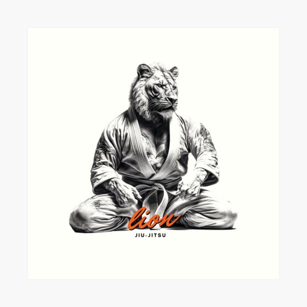

Бразильское джиу джитсу
 Бразильское джиу-джитсу (порт. Jiu-jítsu brasileiro) — боевое искусство и международное спортивное единоборство, основой которого является борьба в партере, а также болевые и удушающие приёмы. Это искусство возникло в начале ХХ столетия из дзюдо Кодокан[1][2], которое было самостоятельной молодой системой (основано в 1882 году), сформированной многочисленными школами (рю) японского джиу-джитсу.